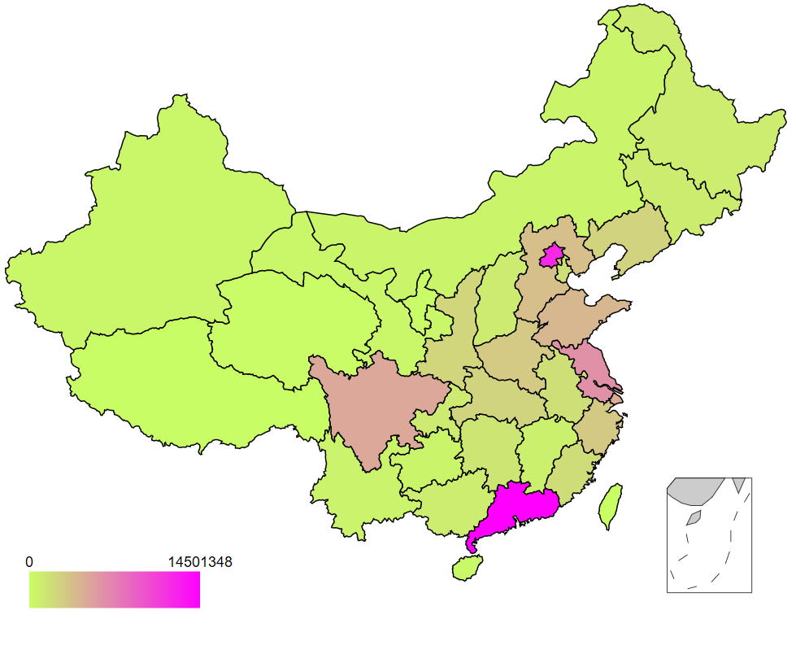
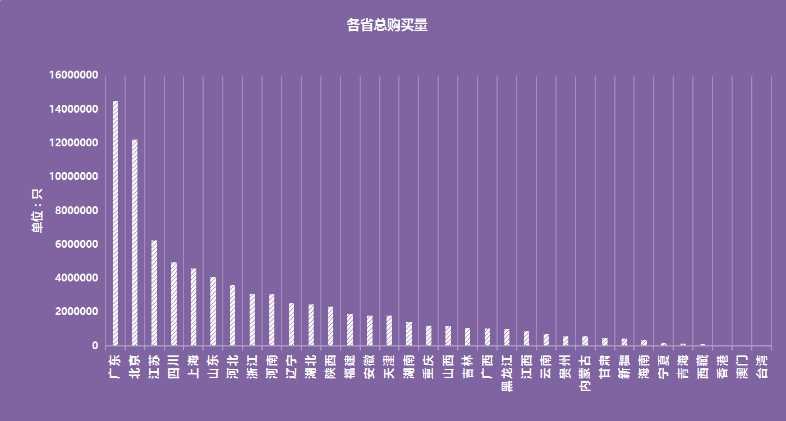
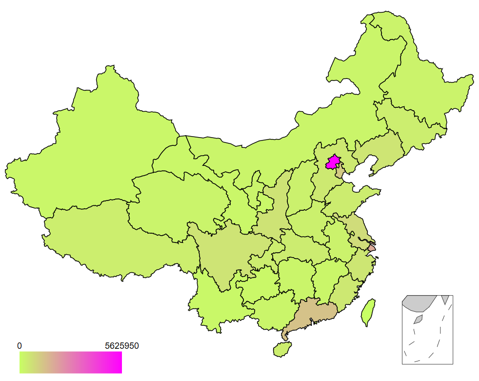
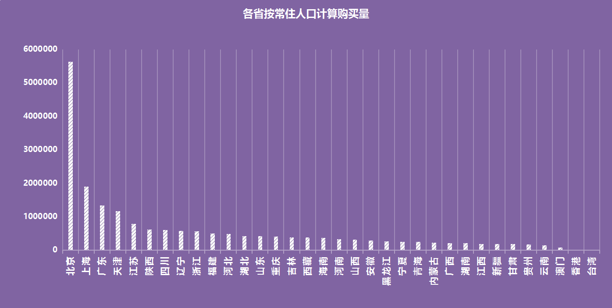
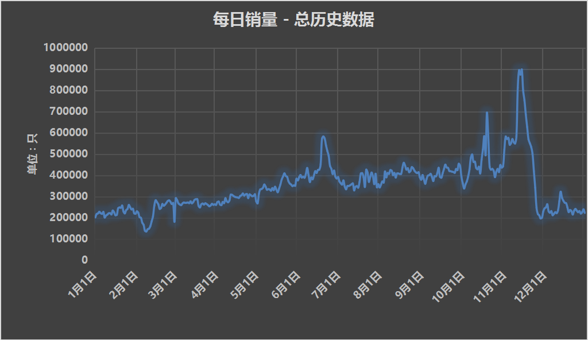
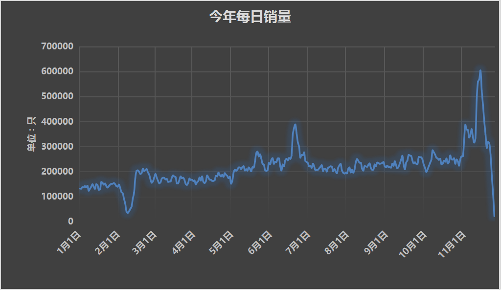
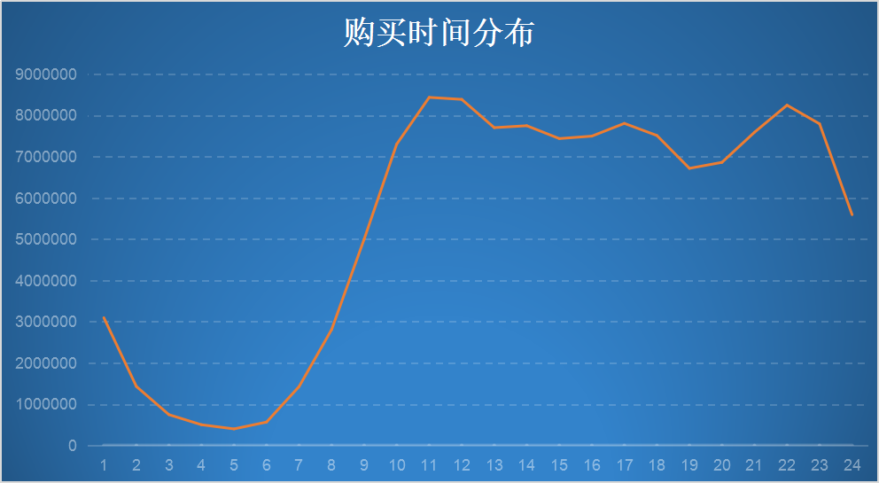
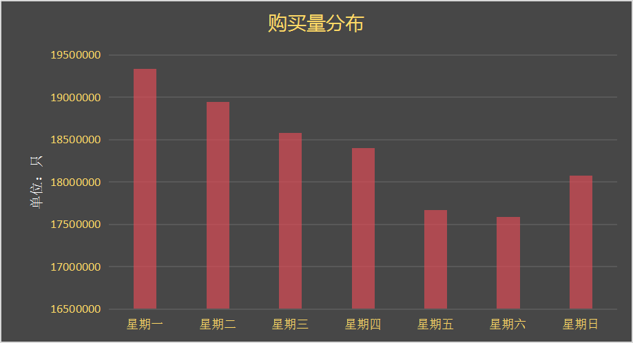

目录 [−]
本文根据京东避孕套的销量情况，分析中国各省对啪啪啪的喜爱程度，以及深度胡扯分析中国人一年四季对避孕套的需求。
虽然本文不涉及低俗的内容，但是因为谈论的话题还是成年人的话题，请小司机们自觉绕行。
前几天看到有人根据京东购买的罩杯的大小进行的分析，所以趁这周休假扒了一下京东的避孕套的购买情况，并基于数据进行分析。
本人是一个涉世不深，思想单纯的孩子，偶尔看到京东的情趣用品的列表，简直就是玲琅满目目不暇接接天蔽日日月同辉。很显然，没有人能精确的说出中国人啪啪啪的详细数据，对于这么隐私的话题，并且以中国儒家思想占正统的中华文化来讲，很难能有一个精准的数据进行分析。但是通过对京东等电商的避孕套的销量来分析，可以估算中国人啪啪啪的一些有趣的特点。
当然，京东并没有提供每种商品的销售量，但是根据购买者对于商品的评价，我们可以进行一个估算。其它京东的商品大家的评价可能比较积极，但是对于套套这样的商品，涉及到个人的隐私，虽然京东提供了匿名评价的功能，但是还是有个人的头像的展示，所以估计购买了套套而真正做了评价的人还是少数，所以粗略估计销售量是评价数的十倍。当然京东的内部人士的可以精确的得到这方面的数据，但是对于外部人员来说，只能通过估计的方法计算。
另外，京东并不是唯一可以买到套套的地方，淘宝也可以。而且很多实体店比如药店、超市、居委会都可以购买或者领取，所以销售量也不能代表中国人啪啪啪的次数。另外，肯定有很多啪啪啪的时候是不使用套套的，所以综上所述，中国人啪啪啪的次数至少要比这里统计的套套的销售量要大几个数量级，至少要十倍以上，我们以K来表示， K可能是10，也可能是100，但是不会影响我们对购买分布的分析。
情趣产品很多，为什么选用套套进行分析呢？答案只有一个，它最常用。
请不要过于执着数据的准确性，权当在这凛冽的寒风瑟瑟的寒冬中的一点点温暖的谈资罢了。
京东男性套套的商品数量大约一万五千多种，可查询的评价大约在两千万左右。
本文不涉及对于评价内容的分析，这方面的内容有空单起一篇文章分析。
京东的评价中没有记录购买者的性别，所以不能进行男女购买特征的分析，虽然根据头像有时候可以分辨出男女，但是毕竟这是少数，而且还不一定准确，所以没有进行性别的分析。
当然，避孕套的用途不只有在啪啪啪的时候使用，在户外探险中，它也是一个很有的工具，可以作为盛水的好工具，也可以对重要的文件进行防水封闭，但是我相信，在京东上购买套套用于这方面需求的人还是少只有少，所以这个误差可以忽略不计。
估算准不准呢？还是有一定道理的，比如让你估算北京有多少家餐馆，北京现在在路上开的汽车有多少，北京有多少理发师傅？密西西比河一天流出多少水？美国诺贝尔物理学奖得主费米最擅长这方面的技能，有兴趣的读者可以搜一搜费米估算，他可以通过一把碎纸估算出原子弹爆炸的量级。所以估算还是有一定的准确性呢。而且通过对京东的数据分析，不进行估算而是根据购买的分布还可以分析一些有趣的结论。
数据抓取
当然第一步就是成功的抓取京东的数据了。
京东的商品栏目 "医药保健 》 成人用品 》安全避孕" 栏目列出了16119种避孕商品，不知道是否有毓婷等药品，根据分类看基本上都是避孕套的产品。
一共有269页。
所以第一步抓取这些页面，得到商品的名称和ID。
商品详情页的格式是 https://item.jd.com/[ID].html,比如ID为1340204，商品名称为杜蕾斯 避孕套 男用 安全套 超薄 计生用品 情爱四合一 32只装 成人用品 Durex的套套的详情页，显示了商品的详细介绍，比如价格、数量等。
为了提高页面的显示速度，它的评论页是通过另外的请求获得的，通过JSONP延迟显示，所以抓取它的评论也很方便了，直接调用相应的请求得到JSON数据。
整个程序使用Go编写，代码相当的简短。主要使用goquery进行DOM分析查找。
最后抓取的商品的数量为15999个，评论数量接近两千万。
数据清洗
当然，抓取的数据还必须进行清洗。很显然，我们并不知道京东的数据格式，所以需要对返回的结果进行分析，幸运的是对于json数据结果来说它的里面的名称并没有混淆压缩，所以很容易根据名称理解它的意思。
第一，我们需要对套套进行统一的计数。不同的厂家不同的商品是不一样的，有的是72只一盒包装的，有的是24只装，还有12只、10只、6只、3只、一只包装的，还有的是3只+3只组合装，还有附送几只的，如果你看它们的名字，五花八门，各种组合都有。有的还叫做“XX支”、“XX片”，有的没写量词，只写了数字，所以单从名称上计算，难度太大，所以实际采用的方案根据详情页中的商品数量来计算，对于大部分的商品，这个值还是很正确的，也有小部分的商品这个值写作了“其它”，计算的时候按照一只来计算，虽然它实际可能是32只包装的，比如上面的那个杜蕾斯的产品。但是从统计的角度来说，我们忽略这个误差。
为什么要按照只计数呢？很显然，买一盒72只装的套套和买一袋一只装的套套明显是不一样的概念，前者72只可以啪啪啪72次，而后者只能啪啪啪一次，如果都按照一只来计算，啪啪啪的估算明显不准，尤其是大部分商品都是多只一盒包装的。
第二，有些用户所在省份显示为澳大利亚或者国外一些地方，这些数据应该剔除。港澳台的数据虽然也统计了，但是你可以暂时忽略。还有一大部分的用户显示所在省份是钓鱼岛，这和京东的物流支持配送钓鱼岛相关，权且当作对我钓鱼岛的爱国支持吧，统计的时候忽略。
数据分析
哪个省份最爱啪啪啪？
首先，我们看看哪个省份购买的套套最多。


根据套套的历史销量，可以看到广东、北京、江苏、四川、上海五省市购买量最多，宁夏、青海、西藏占底。
当然，这里有一个人口总量的问题，人口大省显然会购买更多的商品。所以我查了一下各省2015年底的常住人口统计，把上面的购买量除以常住人口基数，可以得到下表：


在这个统计中，位列前五名的是北京、上海、广东、天津和江苏，陕、川、辽、浙紧随其后，甘肃、贵州、云南占底。
显然一线城市的居民更喜欢啪啪啪，但是西北的陕西、西南的四川、东北的辽宁也不甘示弱，人均消费量也很高。偏远地区的消费量就比较底了，也可能和他们的电商普及的程度有关。
一个值得注意的现象是北京的人均消费量远远高于其它的省市，是第二名的上海的两倍还多，这一点让我很迷惑，想了多个答案来解释：
- 流动人口带来的误差。北上广深的流动人口比较多，所以流动人口的消费量计算在了常住人口的头上。但是一线城市的流动人口都非常的多，广州、深圳、东莞的流动人口也不少吧？
- 北京的消费者更喜欢在京东上购买套套，而江浙和南方的消费者更喜欢在淘宝上购买。
- 北京的消费者更喜欢啪啪啪？ 差距不应该这么大吧。
消费者更喜欢在一年的哪个日子购买？
总历史的消费量来看，消费者在一年之中的购买的分布如下图所示：

而今年2016年的每天的购买量的分布如下图：

可以看到今年的消费量的分布和往年保持一致，请注意2月初的一个波谷、6月份和11月份的两个波峰。
可以看出一些有趣的结论：
- 2月份的波谷是由春节假期造成的。这倒不是说春节大家啪啪啪的次数会明显减少，而是很多人减少了网上购物的次数，导致这个波谷的产生。
- 6月份和11月份的波谷明显是由6.18和双十一的活动造成的，可见大家对于套套也是喜欢囤货的。记得水木上有个网友说屯了一箱子，可以用几年了。
- 双十一的大家购买的力度更大，远远的大
- 双十一对商家的伤害也是巨大的。因为大家的囤货，导致十一月下旬开始一直到春节，套套的销量明显低迷。
- 另外一个有趣的现象就是假期后补货。因为假期中啪啪啪对套套的消耗，可以明显看到春节后几天、十一假期结束、端午节几天是套套的购买小高峰，因为套套在假期中用完了，或者到了购买的阈值。清明节和五一节不太明显，可能这两个节日大家的主要的活动是旅游，对套套的消耗不是很高。
- 圣诞节前也是一个小高峰，但是由于前期双十一大量的囤货，导致这个小高峰不是很强烈。
- 二月份波谷后的一个小高峰除了和补货相关，也可能和情人节假期有很大的关系。
- 除了一些波谷波峰以及冬季的低迷以外，全年的套套的销量成一个平稳的态势发展。
一天之中哪个时间段最爱买套套？

从早上7点开始，大家开始活跃，到十点，购买欲望开始强烈，晚饭时有个小低谷，但是到晚上十点又有一个波峰，可能在晚上十点做准备动作的时候发现套套库存不够补货。夜晚是睡眠和欢悦的时间，所以这段时间购买量比较少了。
基本上，这个普通的商品的购买分布是一致的，这也是大家正常的网络活动时间的分布。
很显然，大家不会因为在需要套套的时候才去购买,而是及时的在购买其它商品的时候一起购买.
周几是大家的购买高峰?

周一是购买的最高峰,这和大家的网络活动时间不太一致,因为周一一般是忙于上班,准备一周的工作,网络活动属于恢复的阶段,周二才能恢复到高峰。可能周五、周六的消耗，大家意识到库存的不足，补货导致。从周日到周六呈递减的趋势，周日才开始上升。
销量最好的十款套套
根据历史销售数据，以下是十款销量最好的套套。
- 第六感 避孕套 安全套 特惠促销装72只 超薄平滑24+螺纹24+六合一24 成人情趣用品 男用套套
- 杜蕾斯 避孕套 男用 安全套 计生用品 LOVE装10只装 成人用品 Durex
- 杜蕾斯 避孕套 男用 安全套 计生用品 超值套装40只（挚爱12+love10+亲昵12+赠随机6只） 成人用品 Durex
- durex杜蕾斯LOVE型避孕套10只装
- 杜蕾斯durex避孕套/安全套 LOVE 10只装
- 冈本Okamoto避孕套skin组合20片（至尊10片+纯或质感10片）超薄安全套 原装进口
- 冈本Okamoto避孕套 skin肤感纯3片装 安全套 原装进口
- 杜蕾斯 避孕套 男用 安全套 计生用品 超薄尊享三合一18只装（超薄10＋倍滑超薄4+紧型超薄4）Durex
- 杜蕾斯 避孕套 男用 安全套 超薄 计生用品 情爱四合一 32只装 成人用品 Durex
- 冈本（Okamoto）避孕套003白金3片装 超薄安全套 原装进口 新老包装随机发货